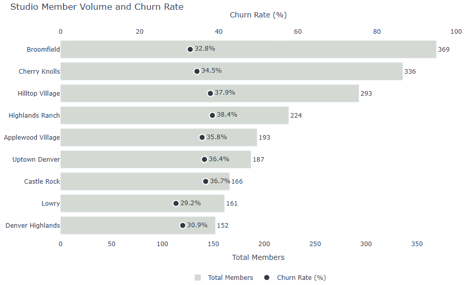
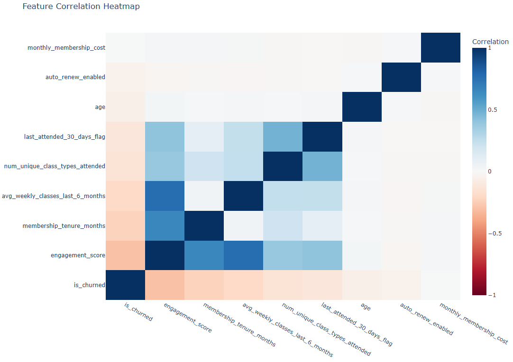
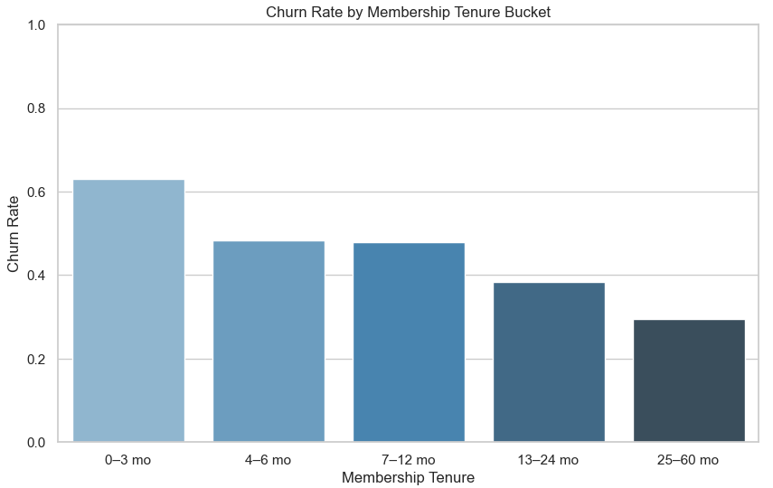
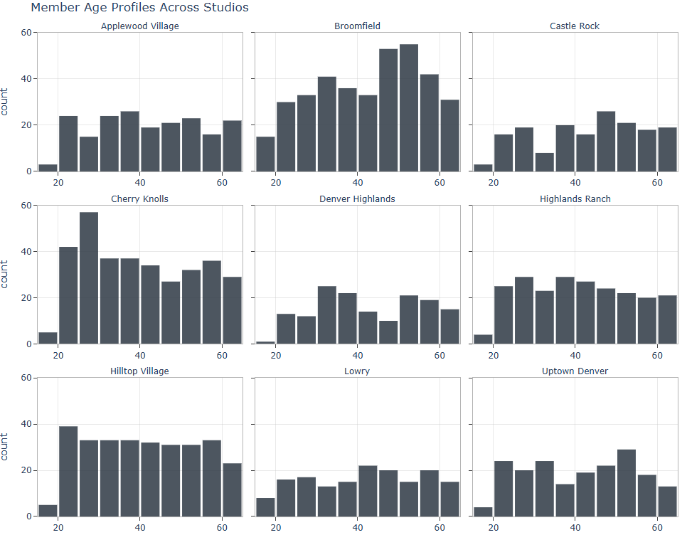
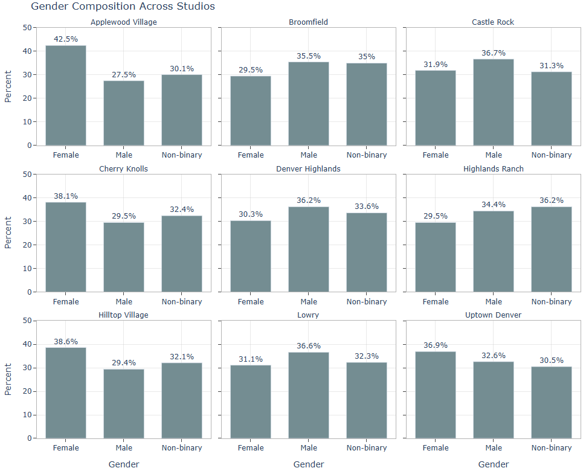

Part 2: Exploratory Data Analysis (EDA)
This section examines the behavioral patterns, demographic signals, and engagement trends that separate members who stay from members who leave.
View full notebook on GitHub
The Population at a Glance
Before looking for patterns, it helps to know the overall churn rate. How big is the problem?
Out of 2,081 members, 726 churned. That is a 34.9% churn rate, meaning roughly 1 in 3 members left. The remaining 65.1% stayed active. That baseline sets the target for the model: can behavioral signals predict which members fall into which group before they make the decision to leave?
Finding 1: Churn Varies Significantly by Location
Not all studios are losing members at the same rate. Some locations have a churn problem. Others are doing something right.
Churn rates across the 9 studio locations range from 29.2% to 38.4%, nearly a 10-percentage-point spread. That gap is not random. It points to location-specific differences in onboarding, member engagement, class offerings, or community culture.
{kind=link}

The members who show up consistently are the ones who stick around. The members who drift from their routine are the ones who cancel.
Finding 2: Engaged Members Stay. Disengaged Members Leave
This is the most important finding in the EDA and the one that drives the model most strongly. Churned members had an average engagement score of 52.4. Active members averaged 63.2. That is a nearly 11-point gap on the same 0 to 100 scale.
Weekly class attendance tells the same story. Active members attended an average of 2.5 classes per week over the prior six months. Churned members averaged 2.0. Half a class per week sounds small. Across thousands of members and months of data, it is a reliable early warning signal.
{kind=link}

Finding 3: Engaged Members Stay. Disengaged Members Leave
New members are the most vulnerable. If they do not build a habit in the first six months, they are significantly more likely to cancel.
Churn risk is highest in the first few months of membership and drops sharply once members cross the six-month threshold. Members who make it past that point have established a routine and are far more likely to stay long term.
{kind=link}

New members are the most vulnerable. If they do not build a habit in the first six months, they are significantly more likely to cancel.The average tenure for churned members was 26.8 months. For active members it was 36.9 months. That 10-month gap confirms what the tenure chart shows: longevity and loyalty go hand in hand.
The practical implication is direct. The highest-return retention investment is not trying to win back members who have already decided to leave. It is intervening early with new members before the habit breaks.
Finding 4: The Auto-Renew Surprise
Members on auto-renew aren’t necessarily less likely to churn. Auto-renew status had almost no meaningful relationship with churn. Members who manually renewed their membership were not meaningfully more likely to cancel than those on automatic billing. This finding is worth calling out explicitly because it challenges a common assumption that often drives retention strategy.
Investing in auto-renew enrollment as a retention lever is unlikely to move the needle. Engagement is the lever. Auto-renew is just a payment preference.
Finding 5: Demographics Vary by Location
Each studio has a slightly different member profile, and that should matter for how retention strategies are tailored.
Age distributions vary across studios. Broomfield skews older, which tends to correlate with more stable attendance patterns. Studios with younger member bases may need different engagement approaches to build the kind of routine that drives long-term retention.
Gender mix is relatively balanced across all nine locations, with roughly 30 to 40% representation across Female, Male, and Non-binary members. A few studios lean slightly in one direction: Applewood Village and Hilltop Village have the highest share of Female members at 42.5% and 38.6% respectively. Castle Rock and Lowry skew slightly more Male.
{kind=link}

{kind=link}

These demographic differences do not drive churn directly. But they inform how retention communications, class offerings, and outreach should be personalized by location rather than applied uniformly across the network.
What the Numbers Say Side by Side
The clearest summary of the EDA is a simple comparison of averages between churned and active members:
| Metric | Active Members | Churned Members |
|---|---|---|
| Average engagement score | 63.2 | 52.4 |
| Average tenure (months) | 36.9 | 26.8 |
| Avg weekly classes (last 6 months) | 2.5 | 2.0 |
| Monthly membership cost | $184.30 | $184.60 |
The membership cost row is worth noting. Churned and active members pay almost exactly the same amount. Behavior is driving churn.